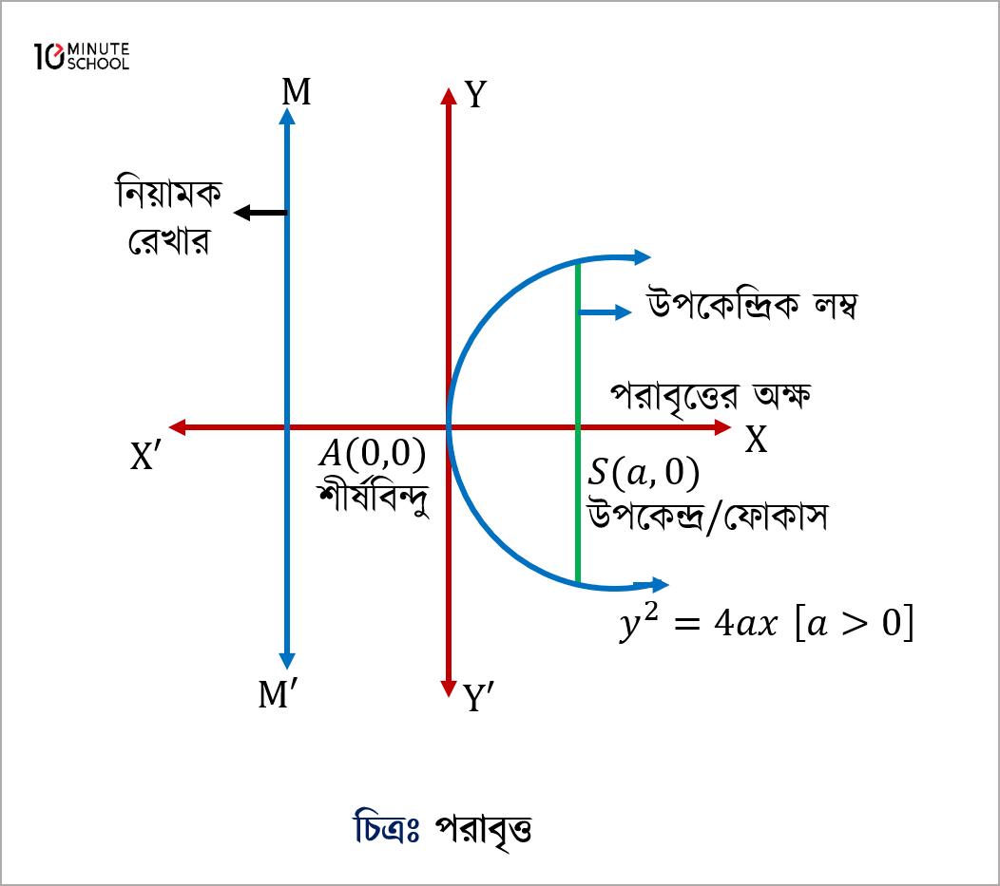
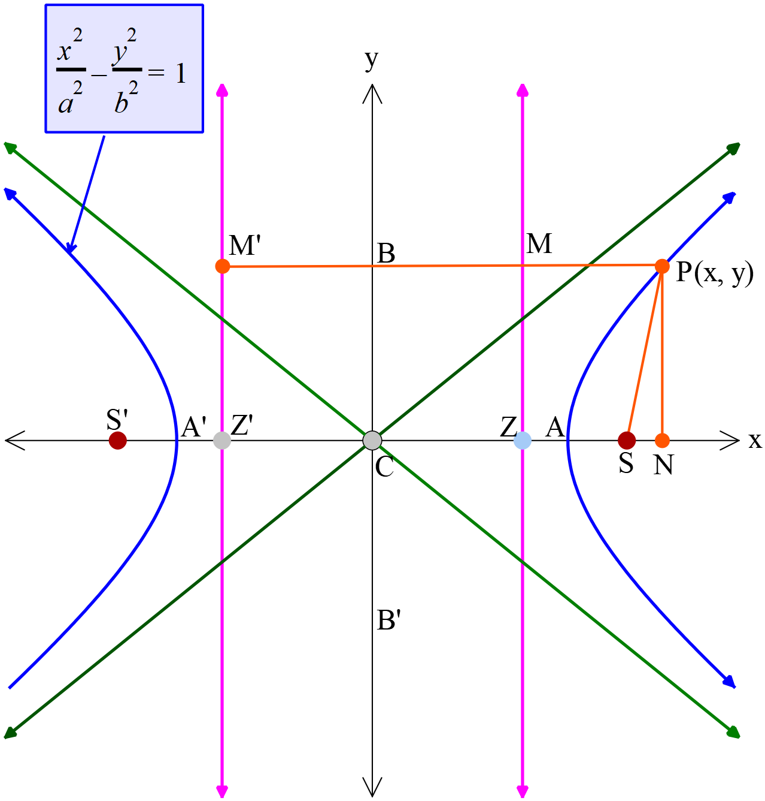

Newsletter:
সাম্প্রতিক আপডেট পেতে আমাদের নিউজলেটার সাবস্ক্রাইব করুন:
Conic Sections
মূল ফর্মুলাসমূহ:
- Circle: x2 + y2 = r2
- Parabola: y2 = 4ax
- Ellipse: x2/a2 + y2/b2 = 1
- Hyperbola: x2/a2 - y2/b2 = 1
আরো জানার জন্য লিংকসমূহ:
Conics News:
প্রাকৃতিক শব্দ শুনো:
Conic Sections এর চিত্র:
পরাবৃত্ত (Parabola):

উপবৃত্ত (Ellipse):

অধিবৃত্ত (Hyperbola):
ভিডিও: Conics Explained
PDF Download:
Conics এর পূর্ণ নোট PDF আকারে পড়ুন